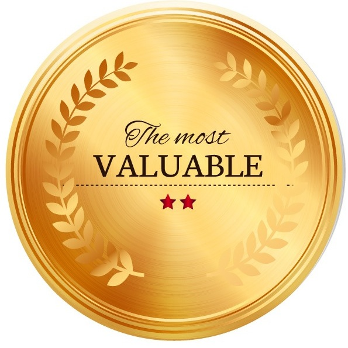

Making You
Help us help you understand your needs. Watch this video, complete this survey and earn a FREE
one-on-one Skype consultation.
Confidence Generator
Video, Commissioned Performance
Externalize Distrust
Video, Commissioned Performance
Rituals for RemovingCreative Blocks
 Making Others
Video, Commissioned Performance
Making Others
Video, Commissioned Performance
Liat + Emily
as Five Twins
Video, Commissioned Performance
Quizzes & Surveys

Generators

News
04.2016 Can't Someone Else Do It?,
"Art & Labor Think Tank: Field of Inquiry", Yerba Buena Center for the Arts, San Francisco, CA
03.2016 They Paid Me to Give You a Tour of the Internet, "Document V", The Luminary, St. Louis, MO
02.2016 Making You, "The Institute for New Feeling / FELT BOOK" (screening), EMMEDIA, Calgary, Canada
02.2016 Three Rituals for Removing Creative Blocks, TheConceptBank Pays Out (award), TheConceptBank.org, Unnoticed Art Festival
02.2016 How to Make Yourself into a Commissioning Body in 5 Easy Steps, transmediale, Berlin, Germany
02.2016 Making You, Past and Future Conditions", A1 Lab Arts, Knoxville, TN
12.2015 Making You was shortlisted for the “ScreenGrab7 International Media Arts Award”, Townsville, Australia
11.2015 interview, "Epistemic Unruliness 4", Always Already Podcast
Sweepstakes

Enter to Win!